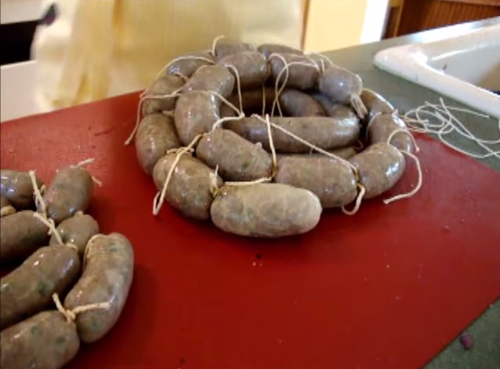
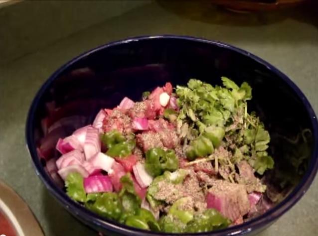

Butifarra
La butifarra colombiana se caracteriza por su forma cilíndrica y su tamaño pequeño, además de que se come con limón (opcional) y se acompaña con bollo de yuca. Son originarias de la Región Caribe colombiana, más exactamente de Soledad, Atlántico y debido a ello se les llaman butifarras soledeñas.
Ingredientes
- 1 1/2 lb de carne de res (Cortar en cuadritos)
- 1/4 lb de carne de cerdo (Cortar en cuadritos)
- Verduras (cilantro, cebolla larga, cebolla roja, aji, ajo)
- sal y pimienta al gusto
- intestinos de cerdo (o membranas para embutidos).
- Pita
Preparación
Cogemos la carne y las verduras, agregandole sal y pimienta, las echamos en un tazón y poco a poco empezamos a moler (por ejemplo con un moledor eléctrico). Obteniendo como resultado la masa de la carne de nuestra butifarra.
Después de tener toda la masa de la butifarra lista, procedemos a meterla en un embudo, haciendo presión para empezar a rellenar los intestinos de cerdo (o membranas).
Cuando tengamos nuestro rollo listo, procedemos a realizar los nudos. La butifarra son aproximadamente 3cm de largo, basta con realizar dos nudos sencillos.
Tips
Si escojen una membrana ancha, la pueden retraer casi en su totalidad en el cuello del embudo, para que cuando empiecen a rellenar sea más fácil el trabajo.